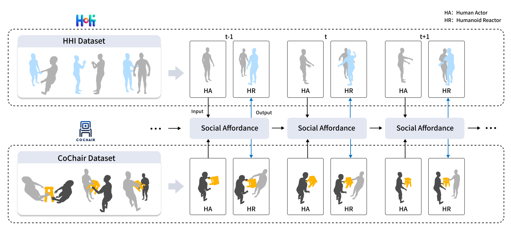
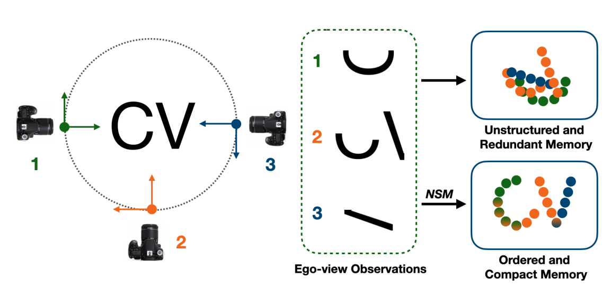
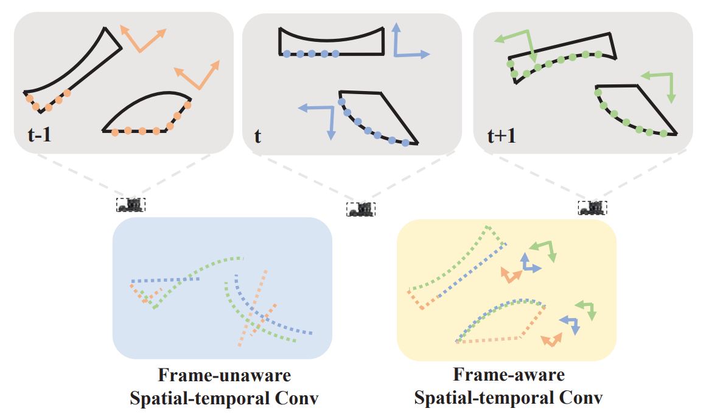
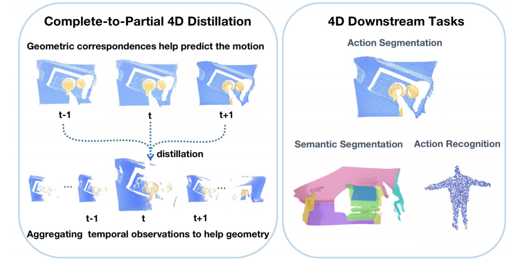
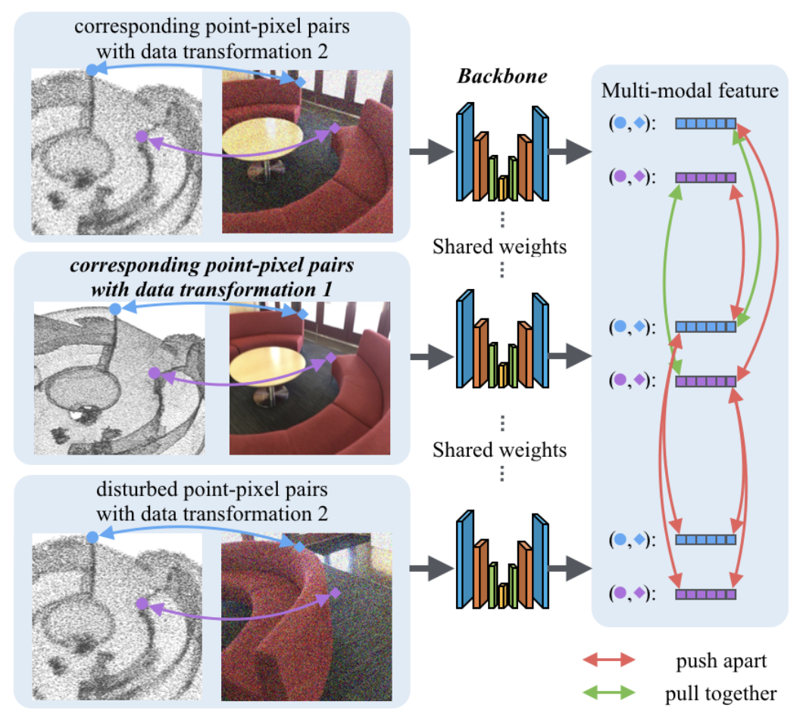

I am Yunze Liu, an PhD student at IIIS, Tsinghua University advised by professor Li Yi. My research interests are 3D/4D Computer Vision, Multi-modal Learning, Human Motion Generation and Human-robot Interaction.
- E-mail: liuyzchina@gmail.com
Papers

Interactive Humanoid: Online Full-Body Motion Reaction Synthesis with Social Affordance Canonicalization and Forecasting
Yunze Liu, Changxi Chen, Li Yi†
arXiv
PDF

NSM4D: Neural Scene Model Based Online 4D Point Cloud Sequence Understanding
Yuhao Dong*, Zhuoyang Zhang*, Yunze Liu, Li Yi†
arXiv
PDF

LeaF: Learning Frames for 4D Point Cloud Sequence Understanding
Yunze Liu, Yunze Liu, Junyu Chen, Zekai Zhang, Jingwei Huang, Li Yi†
ICCV2023
PDF

Complete-to-Partial 4D Distillation for Self-Supervised Point Cloud Sequence Representation Learning
Zhuoyang Zhang*, Yuhao Dong*, Yunze Liu^, Li Yi†
CVPR2023
PDF

Point Primitive Transformer for Long-Term 4D Point Cloud Video Understanding
Hao Wen*, Yunze Liu*, Jingwei Huang, Bo Duan, Li Yi†
ECCV 2022
PDF

HOI4D: A 4D Egocentric Dataset for Category-Level Human-Object Interaction
Yunze Liu, Yun Liu, Che Jiang, Kangbo Lyu, Weikang Wan, Hao Shen, Boqiang Liang, Zhoujie Fu, He Wang, Li Yi†
CVPR 2022
PDF
Project

Contrastive Multimodal Fusion with TupleInfoNCE
Yunze Liu, Qingnan Fan, Shanghang Zhang, Hao Dong, Thomas Funkhouser, Li Yi†
ICCV 2021
PDF

P4Contrast: Contrastive Learning with Pairs of Point-Pixel Pairs for RGB-D Scene Understanding
Yunze Liu*, Li Yi*, Shanghang Zhang, Qingnan Fan, Thomas Funkhouser, Hao Dong (* equal contribution)
arXiv:2012.13089 [cs.CV], Dec 2020
PDF
Activities
Affiliations